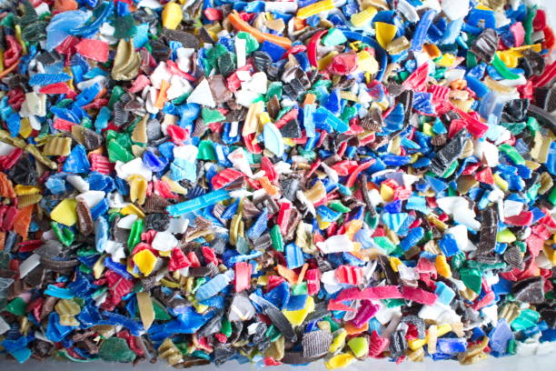
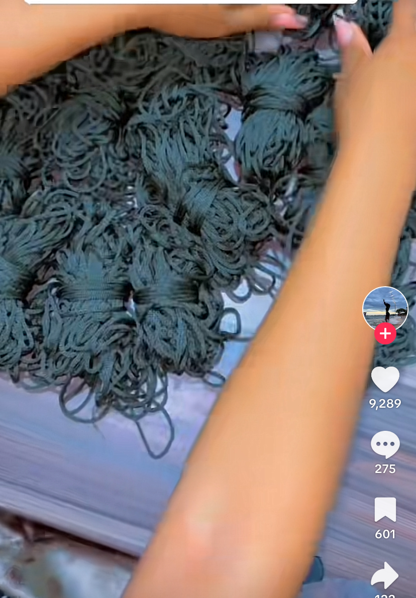

Our Process
1. Waste Collection
We collaborate with local waste collectors, youth groups, and informal recyclers to collect plastic waste, mainly PET bottles, from households, markets, and streets.

2. Community Sorting & Cleaning
Plastic is sorted and cleaned using affordable, locally built machinery made by youth engineers from Katwe. This ensures low-cost and sustainable operations.

3. Shredding & Processing
Using low-energy shredders, we process plastics into flakes, which are then melted and spun into synthetic fibers. This technique allows us to produce recycled yarn and artificial wool for local textile and craft industries.
4. Crafting & Textile Production
We supply recycled yarn to tailors, knitters, and artisans, helping them create sustainable products. This supports local businesses while reducing environmental waste.
